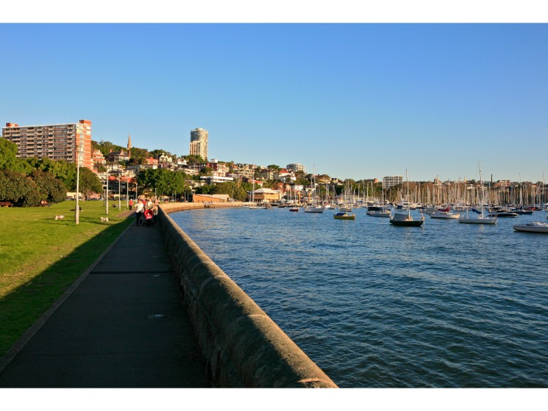

There are many nice spots around Sydney, some with good views and others...not so much. Here is a list of 3 places that have offered a beautiful spot to not only sit and relax but a view that can only be enjoyed in person.
|

Source: Alex Proimos | https://commons.wikimedia.org
|
|
Source: http://www.century21.com.au/
|
Rushcutter BayA long and beautiful park surrounding the harbour and marina. This park caters for all types of people. Some people enjoy going for a nice jog next to the water whilst others enjoy a nice picnic in the sun with family. From morning to evening, you will always find nice boats and yachts floating in the waves of the bay. |
Ken Newman ParkWhilst it may not be in the big CBD, this small lookout and park in Ermington can oversee most of Silverwater, Rhodes and the Sydney Olympics Park. In the far distance, you can even see the massive ANZ stadium. A nice local park to relax and have a wind down after a busy day. |
Lavender BayWith one of the best views of the Harbour Bridge, it should come to no surprise that Lavender Bay is often a common place for locals (or those who know of the place to go) and watch the New Year fireworks. On normal days it is a quiet park in an expensive residential area and lies perfectly between Milsons Point and McMahons Point. |